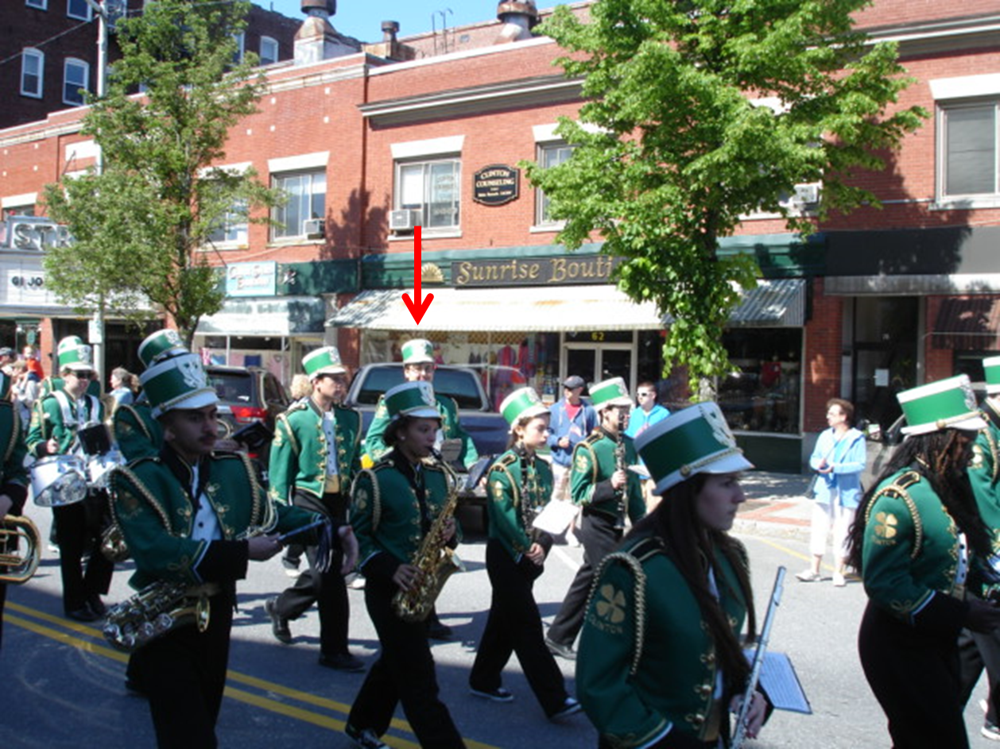

Music
My Start
I joined the band at the Clinton Middle School over a decade ago. I didn't know what instrument I wanted to play so I chose one I thought I would like and that is how I started playing the trumpet. I spent much time playing the trumpet and loved every second of it. When I started seventh grade I tried out for the Central District Music Festival. Kids from all over the district would come and audition for a chance to show they were the best of the best. I auditioned and I didn't make it. But the next year I started taking lessons with a great mentor of mine Mark Bacon and I made it.
High School

When I joined High School I joined the Clinton High School Band and we played at the football games, marched at local parades, and had concerts in the spring and fall. I continued with my lessons with Mark Bacon and I truly started to excel. I quickly became first trumpet in my band and continued to audition for Central districts throughout High School making it again my Senior year.
University of Massachusetts Minuteman Band

This video is of the UMMB at our last field show of the 2015 season. It is quite long but worth the watch. The songs we played included a Bruno Mars medly, Sweet Freedom/ Takin it to the Streets, Malaga, Promise of the Living, Hot Hot Hot, and at the very end the senior show. I have been with the UMMB for 3 years now and it has been a life changing experience. It is a lot of work. We have practice monday-friday from 440-610 during the fall semester and most of our weekends are gone. We start when the temperature is at its highest and end the year when the temperature is at its lowest. I have performed at the Macy's Thanksgiving Day parade, Gillette stadium, Beaver Stadium at Penn State, and Allentown Pennsylvania. My trumpet skills have increased tremendously and I have become a much better musician overall. I also met my girl friend in the Band. We were both on the Administrative staff and the rest was history. My role on the Administrative staff